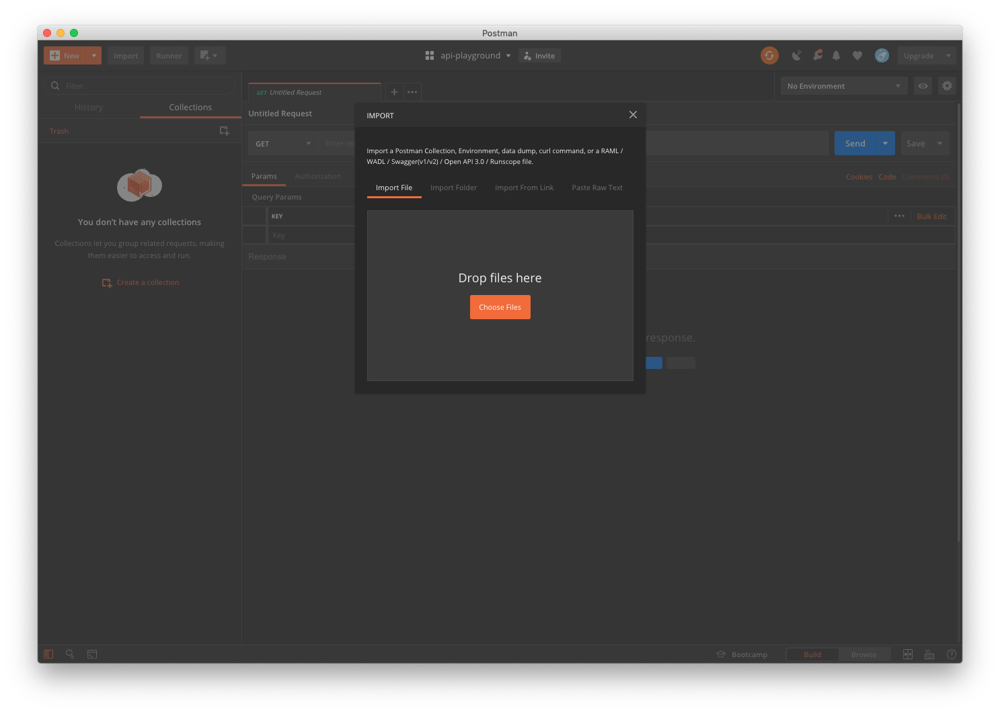

Introduction
In this exercise we will learn how we can create and test the API contract using Postman and Newman. This exercise will step you through how to create a mock server and run pur integeration tests against the various endpoints.
Step 1 - Locate completed contract
For this exercise, you will require a complete and valid swagger doc. If you have completed the steps in exercise-1 continue on to the next step.
If not you can download a completed version of the the contract here. Be sure to download the file to the directory you are working in.
Step 2 - Postman, OpenAPI and a Contract
Now that you have the complete swagger doc, open Postman, in the top left hand corner of the application window, select Import button to reveal the file explorer.

Select choose files and navigate the to the directory were you swagger file is save.
If the swagger file is vaild and can be parsed, a new collection with the label ToDo List will appear in Postman's collections sidebar.
Step 3 - Exploring our imported API Spec
In Postmans collection explorer, collapse the ToDo List collection and any subdirectories and examine the contents.
You should find 5 endpoints, ranging from GET an item to DELETE and item. Lets explore one of these items in more detail.
Select the item with label List All Items. This is a GET HTTP Operation that will return all valid Todo items in a array.
To the right hand corner, we can see examples of our response. Click Examples(2) and select an item from the list to reveal example responses.
Step 4 - Setting up our Mock Server
We will to setup a server to run our tests. Luckily, Postman offer us a mock server out of the box. This provides the ability to run the tests and validate the api schema. Another advantage is that we can run a mock server and allow the developers to retrieve mocked responses until the backend is implemented.
Let's setup a mock server for our Todo collection in Postman.
- Select the parent row of the ToDo List collection from the collection explorer to the left of the window.
- Select the right facing arrow to expand collection settings. Navigate to the
more buttonand selectMock Collectionfrom the options. - The next window will present you with options to configure the server, select the
Createbutton to create mock server.
Step 5 - Testing, testing testing!
Now that we have explored POstmanand setup our mock server. Next we will adds ome basic test to validate our api contract.
GET - List All
First up, the List All endpoint. First, we will update the success response. As described ealrier, navigate to the Examples and select the Succsss Response to reveal editor.
- In the example request url/address bar, replace the
with. - Copy and paste the array of todo items below, into the Example response body editor. Save and return to request window.
[
{
"id": "1234",
"name": "Test",
"description": "First test item"
},
{
"id": "1235",
"name": "test 2",
"description": "Second test item"
}
]
- Select the test tab and paste the sample code below.
- In the request url/address bar, replace the
with.
var body = JSON.parse(responseBody);
var schema = {
todos: {
type: "array"
}
};
pm.test("Status code is 200", function() {
pm.response.to.have.status(200);
});
pm.test("Response body matches expected schema", function() {
pm.expect(tv4.validate(body, schema)).to.be.true;
});
- Verify the tests is running by selecting the
Sendbutton.
POST - Create Todo Item
Next we want to confirm we have created a todo item successfully. We do this by testing the status code retunred is that as decribed in the schema. First, we wil l update the example success response.
- In the example request url/address bar, replace the
with. - In the example request body, paste the object below. This will be our post body. Save and return to request tab
{
"id": "1234",
"name": "New Item",
"description": "New item spiel"
}
- Next add a test to check the response statusCode is as expected. Copy & paste snippet below into the test tab.
pm.test("Return a successful status code", function() {
pm.expect(pm.response.code).to.be.oneOf([200, 201]);
});
- In the request url/address bar, replace the
with. - Verify tests by selecting the
Sendbutton.
GET - Get Item
For this GET request, an itemId is passed as a param and a single object is returned. We will use our tests to validate the schema of the response and the expected statusCode. As with the previous intrustions, navigate tot he Examples tab for this request and open the editor.
- In the example request url/address bar, replace the
with. - In the example request url/address bar, replace the
<string>with1234. - In the example request body, paste the object below, save chnages and close window.
{
"id": "1234",
"name": "Test",
"description": "Test item 1"
}
- In the
paramsset the value ofitemIdto1234. - Now add the test below to the tests tab. Save changes.
var body = JSON.parse(responseBody);
var schema = {
properties: {
id: {
type: "string"
},
name: {
type: "string"
},
description: {
type: "string"
}
}
};
pm.test("Status code is 200", function() {
pm.response.to.have.status(200);
});
pm.test("Response body matches expected schema", function() {
pm.expect(tv4.validate(body, schema)).to.be.true;
});
- In the request url/address bar, replace the
with. - Verify tests by selecting the
Sendbutton.
PUT - Update Item
- In the example request url/address bar, replace the
with. - In the example request body, paste the sample request object below, save changes and close window.
- In the
paramsset the value ofitemIdto1234. - In the request body tab paste the object below.
{
"id": "1234",
"name": "New Test",
"description": "New test description"
}
- Now add the test below to the tests tab. Save changes.
pm.test("Returns status code of 202", function() {
pm.response.to.have.status(202);
});
- In the request url/address bar, replace the
with. - Verify tests by selecting the
Sendbutton.
DELETE - Delete Item
- In the example request url/address bar, replace the
with. - In the example request url/address bar, replace the
:itemIdto1234. - Save a close editor, head back to request tab.
- In the
paramsset the value ofitemIdto1234.
pm.test("Returns status code of 204", function() {
pm.response.to.have.status(204);
});
- In the request url/address bar, replace the
with. - Verify tests by selecting the
Sendbutton.
Step 6 - The CLI, Newman and our Tests
Ok so up to now we have manually verified our test against the schema by selecting the Send button for each request. In this section we are going to export our postman collection and run our tests in the command line using a tool called Newman.
Exporting the Postman collections
- From the collection explorer, expand the collection settings pane.
- Select the
morebutotn to reveal hidden menu. - Select
Exportfrom the options. - In the next window, select the 3rd option,
Collection v2.1. - Add a new directory to the root of your working directory, named
postman - Export collection to the the
postmandirectory.
Exporting the Postman environment
- Select the
Settingsicons from the top right. - Find the
ToDo Listenvironment config and sleect the export icon. - Export environment config to the the
postmandirectory.
Installing Newman
- Open a command line application of your choice.
- Navigate to the working diretory
- Install newman via npm
npm i -g newman
- In the command line enter te folowiing command to run the tests.
newman run ./postman/collection.json -e ./postman/environment.json